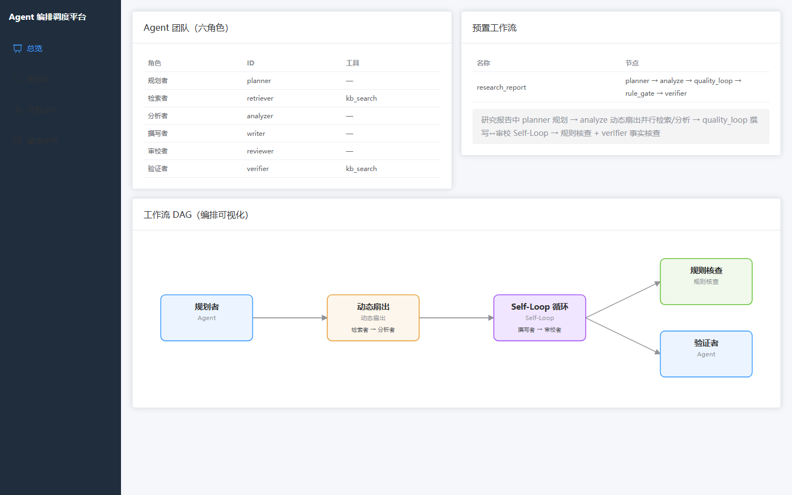
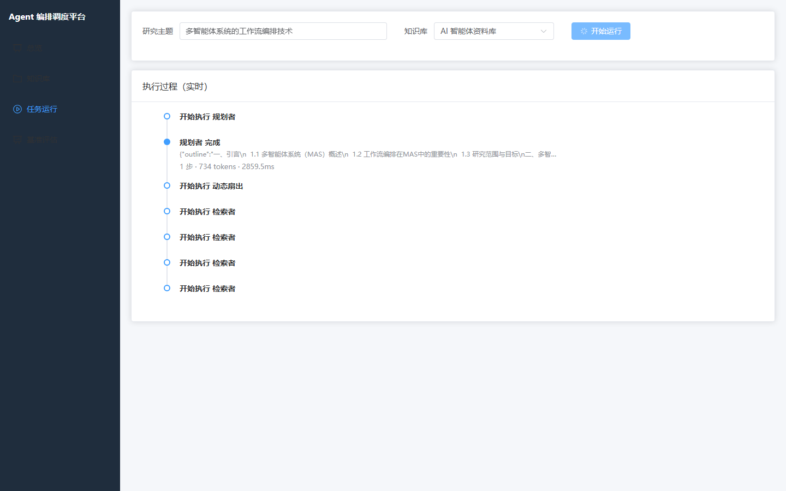
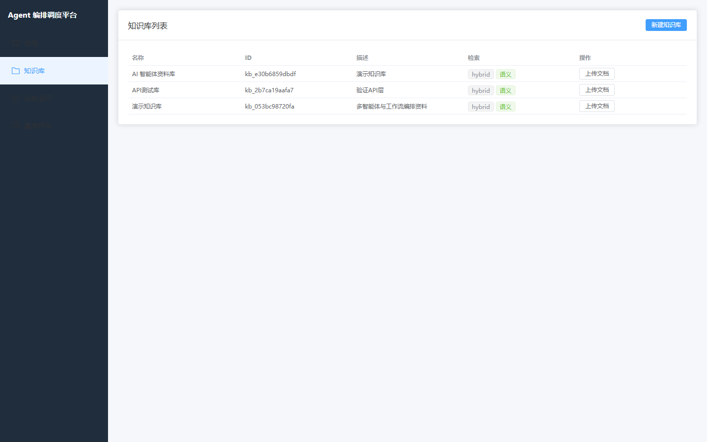
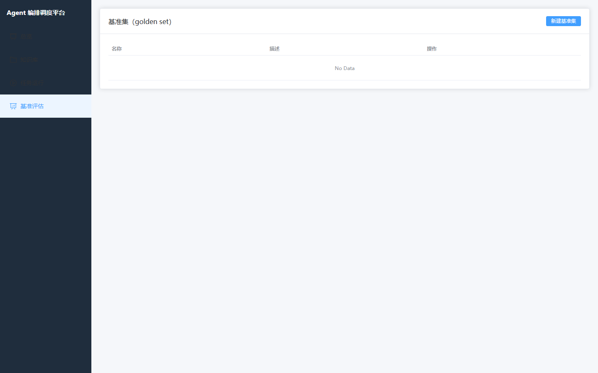

大语言模型（LLM）正在从「单轮问答」迈入「智能体（Agent）自主协作」的新阶段。以 LobeHub、DeepSeek Harness 为代表的 Agent Harness 框架，让模型能够通过「规划—检索—分析—撰写—审校—验证」的多角色协作，自主完成原本需要人类编排的复杂任务。然而，市面主流框架（LangChain/LangGraph）将编排细节高度封装，开发者难以理解与掌控「编排、调度、执行、验证」的内在机制，也不利于教学与工程评审。
本作品自研编排内核（不依赖 LangGraph），仅复用 LLM SDK 与向量检索组件，使「Agent 工具循环、工作流编排、动态调度、Self-Loop 自我循环、结果验证反馈」五大核心能力全部自主可控、可解释、可演示，形成「知识库 → 团队 → 工作流 → 动态调度 → 自我循环 → 验证反馈」的完整工程闭环。
从技术演进看，大模型应用经历了三个递进阶段：第一阶段「单模型 + 提示词」，能力受限于单轮问答；第二阶段「单 Agent + 工具」，模型通过 function-calling 调用外部工具，但仍难完成多步骤、多角色的复杂任务；第三阶段「多 Agent 编排 + 调度 + 验证」，通过声明式工作流把多个专职 Agent 组织成可并行、可循环、可验证的协作系统。本作品正落在第三阶段，并选择自研内核而非直接套用框架——其价值在于：编排的每一步（依赖判定、动态扇出、循环控制、验证反馈）都对评审可见、可解释，而非隐藏在框架黑盒之中。
业务场景选定为「基于知识库的多智能体研究报告生成」：用户上传资料文档建立知识库 → 提交「撰写《某主题》研究报告」任务 → 平台组建 Agent 团队 → 编排引擎逐步执行（规划 → 检索 → 分析 → 撰写 → 审校 → 循环优化）→ 输出一份带引用溯源、经过多维验证评分的最终报告。
| 核心需求 | 痛点 | 本方案对应能力 |
|---|---|---|
| 知识库集成 | 检索不准确、无法溯源 | 语义 + 关键词混合检索，返回带来源片段 |
| Agent 团队 | 单模型能力单一、无分工 | 六角色声明式定义，各自具备 ReAct 工具循环 |
| 工作流编排 | 依赖关系复杂、易失控 | 通用 DSL 定义 DAG，支持顺序/并行/条件分支 |
| 动态调度 | 静态流程无法应对变化 | 运行时按规划结果动态展开/插入节点、并行调度 |
| Self-Loop | 一次生成质量不稳定 | 「执行→评估→反馈→重执行」声明式循环 |
| 结果验证 | 大模型幻觉、结果不可信 | 规则核查 + LLM 评分 + 事实核查 + 基准集 |
功能需求涵盖平台全生命周期：① 知识库的创建、文档上传（txt/md/pdf）、自动解析分块、混合检索；② Agent 与团队的声明式注册与配置；③ 工作流的 DSL 定义、解析校验与运行；④ 运行任务的提交、SSE 实时进度推送与结果查询；⑤ 报告终稿的引用溯源展示；⑥ 基准集的创建、运行与覆盖度评估。
非功能需求强调四点：可靠性（LLM 指数退避重试、节点级异常兜底、单次抖动不中断整次运行）；可观测性（每节点 token 数、耗时、步数、降级标记全程落库，可回溯）；性能（动态扇出并行执行 + 信号量限流，在吞吐与限流之间取得平衡）；可扩展性（检索器、LLM 网关、验证器均抽象为可插拔接口，便于替换与扩展）。
| 层 | 选型 | 选型理由 |
|---|---|---|
| Web 框架 | FastAPI + Uvicorn | 异步、自动 OpenAPI、SSE 流式支持 |
| 编排内核 | 自研（不依赖 LangGraph） | 评分点全链路自主可控、可解释、可演示 |
| Agent 循环 | 自研 ReAct（function-calling） | 真·工具循环能力，可控 |
| LLM | DeepSeek（OpenAI 兼容协议） | 国内可用、成本低、支持 function-calling |
| Embedding | bge-small-zh-v1.5（sentence-transformers / fastembed） | 本地免费、离线、中文语义好 |
| 向量检索 | 内存向量 + RRF（预留 ChromaDB） | 轻量、与 BM25 融合、可切换 |
| 关键词检索 | jieba + rank_bm25 | 无模型降级兜底 |
| 元数据存储 | SQLite（SQLAlchemy） | 零配置、单文件、可回溯运行轨迹 |
| 前端 | Vue3 + Element Plus + Vite | 完整演示页面（知识库/看板/报告/评分） |
一次完整的报告生成遵循以下时序：
/api/runs 创建运行。outline 与 subtasks。kb_search 检索、analyzer 提炼论点。每个 Agent 以声明式方式定义，字段包含 id / name / role_prompt / tools / llm_config / output_schema / max_steps。其中 output_schema 为 Pydantic 模型，用于结构化输出的强校验。
| 角色 | 职责 | 关键工具/输出 |
|---|---|---|
| planner 规划者 | 拆解主题为子任务大纲，决定检索策略 | 输出 outline + subtasks 列表 |
| retriever 检索者 | 多轮检索知识库片段并附来源 | kb_search（语义+关键词混合检索） |
| analyzer 分析者 | 对检索材料归纳、提炼论点与证据 | 引用整理、去重 |
| writer 撰写者 | 按大纲生成报告正文并标注引用 | 强制输出【来源：文档名】标注 |
| reviewer 审校者 | 结构化四维评分 + 具体修改反馈 | 输出 score/relevance/accuracy/completeness/fluency/feedback |
| verifier 验证者 | 事实核查：断言是否被引用支撑 | 输出 verified_claims/unsupported_claims/通过率 |
六角色团队采用「顶层编排 + 底层协同」的分层混合协作模型：顶层由 planner 统一规划、由工作流引擎统一编排执行顺序；底层各角色（retriever/analyzer/writer 等）在各自职责内自主决策与调用工具。这种设计兼顾了「中心化编排的可控、可解释」与「去中心化智能体的自主、灵活」——既不会因完全去中心化而失控，也不会因过度中心化而丧失智能体的自主性。
每个 Agent 节点的运行方式是 ReAct 循环：大模型返回 tool_calls 则逐个执行工具并以 tool 消息回填；返回最终文本则做结构化校验。解析失败带错误反馈重试（≤2 次），仍失败则降级返回原文并标记 degraded。
while step < max_steps:
resp = llm.chat(messages, tools=agent.tools, response_format=...)
if resp.tool_calls: # 模型决定调用工具
执行工具 → 结果回填 messages（继续循环）
else: # 模型决定结束
output = 结构化解析(resp.content) # Pydantic 校验
return output # 失败则带错误反馈重试 ≤2 次
角色提示词是每个 Agent 的行为契约，遵循四条设计原则：① 角色化系统提示词——为六角色分别编写 role_prompt，明确职责边界与输出契约；② 结构化输出约束——通过 response_format=json_object + Pydantic Schema 校验，保证输出可解析；③ 评分锚点校准——reviewer 提示词内置「0.60=基本可用 / 0.80=可交付 / 0.90=优秀」档位，抑制主观打分的随机跳动；④ 引用溯源强制——writer 提示词强制每个关键论点标注 【来源：文档名】，保证可溯源。
结构化输出可靠性采用「校验 → 反馈 → 重试 → 降级」四级机制：解析失败时把错误与 Schema 一起作为反馈回填重试（≤2 次），仍失败则返回原文并标记 degraded，绝不静默产出非法结构。
状态传递：节点间通过共享 RunState 对象传递数据，每个节点声明 reads（读哪些字段）与 writes（写哪些字段），调度器执行时传入只读视图、合并局部更新，全程记录变更历史——这是「可回溯、可复现、可画执行轨迹」的基础。
工作流以 YAML/JSON 声明为 DAG，节点类型包括 agent / expand / loop / rule，通过 depends_on 声明依赖、reads/writes 声明与共享 RunState 的读写契约。
name: research_report
nodes:
- id: planner agent: planner writes: {outline, subtasks}
- id: analyze type: expand input_key: subtasks # 动态扇出
subgraph: [retriever → analyzer]
- id: quality_loop type: loop score_key: review_score threshold: 0.80
body: [writer → reviewer]
- id: rule_gate type: rule input_key: draft # 确定性规则核查
- id: verifier agent: verifier depends_on: [quality_loop]
编排逻辑：「所有依赖完成即就绪」触发节点；节点间通过共享 RunState 传递数据，全程记录变更历史，可回溯、可复现、可画执行轨迹。
asyncio 并行执行；每个节点一把锁 + 双重检查，避免被多个依赖并发触发时重复执行。subtasks 列表后，expand 节点把每个子任务实例化为「retriever→analyzer」子图并行执行，结果汇聚回 state——实现数据驱动的动态扇出。asyncio.Semaphore 限制同时进行的 LLM 调用数（默认 4），避免触发 DeepSeek 限流、保护成本。在调度策略上，平台选择「DAG 静态拓扑 + 运行时动态扇出」的组合：DAG 保证依赖关系清晰可判（环检测 + 拓扑校验），动态扇出则处理「任务数量在运行时才确定」的场景（如 planner 拆出几个子任务）。相比完全静态的流程或完全自由的自主协作，这一组合在「可控性」与「灵活性」之间取得平衡，是本平台调度算法的核心设计取舍。
核心调度算法采用「递归依赖等待 + 备忘录 + 双重检查锁」实现，既支持任意 DAG 拓扑，又保证同一节点只执行一次：
async def run_node(node):
if node.id in memo: return memo[node.id] # 幂等去重
async with lock(node.id): # 每节点一把锁 + 双重检查
if node.id in memo: return memo[node.id]
await gather(*[run_node(d) for d in deps(node)]) # 先等依赖完成
output = await execute_node(node) # agent / expand / loop / rule
memo[node.id] = output
return output
动态扇出的关键在于 expand 节点：它读取 planner 产出的 subtasks 列表，为每个子任务克隆一个继承共享状态的子状态、并行执行「retriever→analyzer」子图，最后将各子任务结果汇聚写回 state——把「静态流程」升级为「数据驱动的运行时图展开」。
Self-Loop 把「执行→评估→反馈→重执行」抽象为声明式循环，三要素齐全：
score >= threshold）+ 轮次上限（max_iterations）。feedback 注入下一轮 writer 的上下文，实现「带反馈重写」。for iteration in 1..max_iterations:
writer(携带上一轮 draft + feedback) → reviewer(评分)
score_curve.append(score)
if score >= threshold: break # 达标退出
[0.72, 0.82] —— 首轮 0.72 未达标 → 反馈重写 → 二轮 0.82 达标退出，直观体现「自我循环优化」。rule_gate 节点并行于 verifier 执行。反馈优化闭环为「生成 → 评估 → 反馈 → 重写 → 再评估」：reviewer 的结构化反馈作为下一轮 writer 的显式输入，使报告质量随迭代提升；最终 verifier 出循环做事实核查，规则核查与基准覆盖度作为客观量化指标，佐证优化效果。
为客观量化「优化前后」的提升，平台引入小规模人工标注基准集：固定文档集 + 3~5 个固定问题 + 每个问题对应的「必覆盖要点」清单。评估时对生成的报告做覆盖度计算：对每个 golden point 先判断直接包含、再按 jieba 内容词命中率（≥50%）判定、最后用字符 2-gram 软匹配容忍近义改写，综合得出「覆盖 / 缺失」与覆盖度得分。
该机制完全确定性、无 LLM 依赖，因此可作为客观、可复现的评测标尺——既能量化不同提示词/参数/编排策略下的效果差异，也能向评审直观展示「反馈优化前后」的覆盖度提升。
| 模块 | 文件 | 职责 |
|---|---|---|
| Agent 运行时 | core/agent/base.py | ReAct 多步工具循环 + 结构化输出校验重试 + token/latency 采集 |
| 工作流引擎 | workflow/engine.py | DAG 就绪调度 + expand 动态扇出 + loop 循环 + rule 规则核查 + 并发限流 |
| 工作流 DSL | workflow/dsl.py | YAML/JSON 解析、依赖校验、环检测 |
| 检索器 | kb/retriever.py | BM25 + 语义向量 RRF 混合检索，语义不可用时降级 |
| LLM 网关 | core/llm/deepseek.py | OpenAI 兼容协议 + 指数退避重试 + usage 采集 |
| 验证 | verification/rules.py | 确定性规则核查 |
| 基准集 | benchmark/service.py | golden set 覆盖度评估 |
| 运行管理 | workflow/runner.py | 异步运行 + SSE 事件流 + runs/run_steps 落库 |
此外，工具抽象层（core/tool.py）将工具统一为「JSON Schema 描述 + 同步/异步执行函数」，内置 calculator / get_current_time / kb_search 三个工具，并通过 ToolRegistry 统一注册、查找与执行；预置团队（presets/research.py）与预置工作流（presets/research_workflow.yaml）把六角色团队与研究报告工作流打包为开箱即用的演示配置。前端由四个视图组成（总览/知识库/任务运行/基准评估），其中「任务运行」页通过 EventSource 订阅 SSE 实现执行过程实时可视化。




| 测试脚本 | 类型 | 覆盖点 | 结果 |
|---|---|---|---|
| scripts/smoke_test.py | 离线 | ReAct 工具循环（MockLLM） | ✅ 通过 |
| scripts/workflow_offline_test.py | 离线 | DAG 顺序 + expand 动态扇出 + RunState 读写 | ✅ 通过 |
| scripts/loop_offline_test.py | 离线 | Self-Loop 未达标继续 / 达标退出 / 轮次上限 | ✅ 通过 |
| scripts/kb_smoke_test.py | 离线 | 解析 → 分块 → 混合检索链路 | ✅ 通过 |
| scripts/demo.py | 真实 | 端到端：入库样例 → 跑工作流 → 出评分/验证/覆盖度 | ✅ 通过 |
| 指标 | 结果 |
|---|---|
| Self-Loop 评分曲线 | [0.72, 0.82]（反馈提分，两轮达标退出） |
| 规则核查 | 4/4 通过（含引用标注） |
| 事实核查 | 通过率 0.93（20 条有据 / 6 条无据） |
| 基准覆盖度 | 1.0（10/10 要点覆盖） |
生成的报告结构完整、逻辑严谨，每个关键论点均带 【来源：文档名】 引用标注，可逐条溯源。
steps / tokens / latency_ms / degraded 均被采集并落库到 run_steps，可回溯每次运行的成本与耗时。Semaphore 限流，避免 8 路以上 LLM 并发触发限流。| 参数 | 取值 | 说明 |
|---|---|---|
| max_steps（ReAct 上限） | planner 6 / retriever 8 / analyzer 6 / writer 10 / reviewer 8 / verifier 10 | 防止工具循环失控 |
| loop max_iterations | 3 | Self-Loop 轮次上限 |
| loop threshold | 0.80 | 评分达标阈值（score ≥ 0.80 退出） |
| max_concurrency | 4 | 动态扇出并发 LLM 调用上限 |
| llm_max_retries | 3（指数退避） | 瞬时错误重试次数 |
| RRF k | 60 | 混合检索融合参数 |
此外，每个 Agent 节点的 prompt_tokens / completion_tokens / total_tokens 与 latency_ms 均被实时采集并写入 run_steps 表，评审可据此核算单次运行的成本与耗时分布，量化「动态扇出并行」带来的时延收益。
| 维度 | 说明 |
|---|---|
| 实际作用 | 作为六角色 Agent 的「大脑」：planner 拆解任务、writer 生成报告、reviewer 评分、verifier 核查；通过 function-calling 驱动工具调用。 |
| 贡献 | 实现自主决策、多步推理与自然语言生成，是编排平台的核心智能来源。 |
| 局限 | 存在幻觉与评分随机性；依赖网络与成本；输出非确定性。平台以「检索注入 + 引用溯源 + 三层验证 + 结构化输出校验」缓解。 |
| 维度 | 说明 |
|---|---|
| 实际作用 | 文档解析→分块→向量化，检索时用「BM25 关键词 + 语义向量」做 RRF 融合，为 Agent 注入带来源的证据片段。 |
| 贡献 | 显著降低幻觉、实现可溯源；本地 embedding 离线可用、成本低。 |
| 局限 | 检索质量依赖文档质量与分块策略；语义模型未安装时降级为纯 BM25，召回能力下降。 |
当前平台未直接采用 MCP 协议，工具调用通过自定义 Tool 抽象 + OpenAI function-calling 实现（统一 JSON Schema 描述、同步/异步执行、结果字符串化回填）。这一设计与 MCP 的「标准化工具接入」目标同构，且 Tool 抽象层天然预留了扩展点——未来可将外部 MCP 服务器封装为 Tool 接入，从而打通更广泛的工具生态。
bge-small-zh-v1.5 用于知识库 chunk 与查询的本地向量化（sentence-transformers / fastembed 双后端），使语义检索离线可用；语义不可用时自动降级，保证链路可跑通。
| 环节 | 模型 / 技术 | 实际作用 | 贡献 | 局限 |
|---|---|---|---|---|
| 任务规划 | DeepSeek（deepseek-chat） | 拆解主题为子任务大纲 | 自主决策核心 | 分解可能不够合理 |
| 检索 | bge 向量 + BM25 | 语义 + 关键词混合检索 | 降低幻觉、可溯源 | 依赖文档质量与分块 |
| 分析 / 撰写 | DeepSeek | 归纳论点、生成正文 | 自然语言生成 | 仍可能产生幻觉 |
| 审校评分 | DeepSeek + Pydantic | 四维结构化评分 + 反馈 | 质量门禁、反馈闭环 | 评分存在随机性 |
| 事实核查 | DeepSeek + kb_search | 断言是否有据、区分有据/无据 | 提升可信度 | 依赖检索召回率 |
| 工具调用 | 自定义 Tool + function-calling | 标准化工具接入与执行 | 真·工具循环 | 非 MCP 标准协议 |
综上，本平台的人工智能能力并非「单模型端到端」，而是「LLM 提供推理与生成、RAG 提供证据与溯源、自定义工具抽象提供执行、规则/基准集提供客观校验」的协同体系——每一环节的作用、贡献与局限均被显式识别，并通过工程手段（检索注入、结构化校验、重试、反馈循环、三层验证）系统性缓解其局限。
总结而言，「Agent 编排调度平台」以自研编排内核为核心，贯通了「知识库集成、Agent 团队、工作流编排、动态调度、Self-Loop、结果验证反馈」六大能力，并以真实 DeepSeek 端到端跑通验证了方案的可行性与有效性。整个平台从底层编排内核到上层演示界面均由零构建，未依赖任何现成编排框架，充分体现了对多智能体协作机制的理解深度与工程实现能力。平台全部源码与运行说明随本方案一并交付，评审可一键复现演示效果。